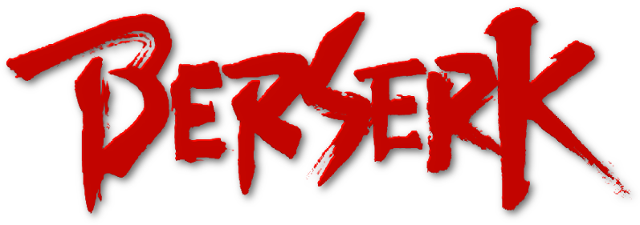
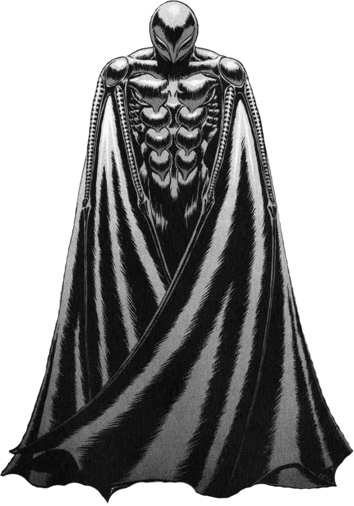

Inicialmente conhecido como Griffith, Femto passa por uma transformação horrível durante o evento traumático conhecido como o Eclipse. Ele se torna um dos God Hand, uma poderosa entidade demoníaca que lidera os Apóstolos, seres corrompidos pelo mal. Femto é a encarnação demoníaca de Griffith após sacrificar seus companheiros e tornar-se um ser demoníaco em busca de poder. Ele é caracterizado por sua aparência sinistra, asas negras e um olho vermelho sinistro. Femto desempenha um papel central na trama de "Berserk", sendo um dos principais antagonistas e uma figura icônica no mundo sombrio e brutal criado pela obra. Seu retorno marca um momento crucial na jornada de vingança do protagonista Guts e na complexa narrativa de "Berserk".